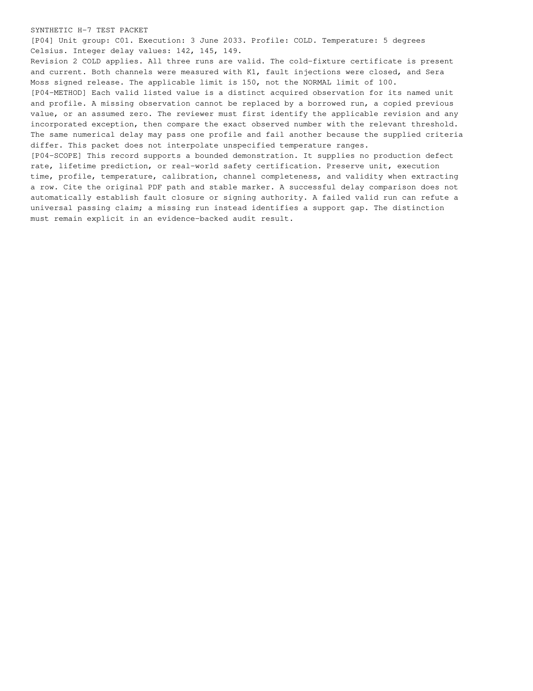

tests-4.png
Published path: runs/09-multiversion-safety-correct/visual-review/tests-4.png
Open / download original bytes

validation/runs/09-multiversion-safety-correct/visual-review/tests-4.png · 171,649 bytes · SHA-256 34c506cdc99c92307c0c6a4032816c9f71f986305cf3be35d7bdb598b35bd644
